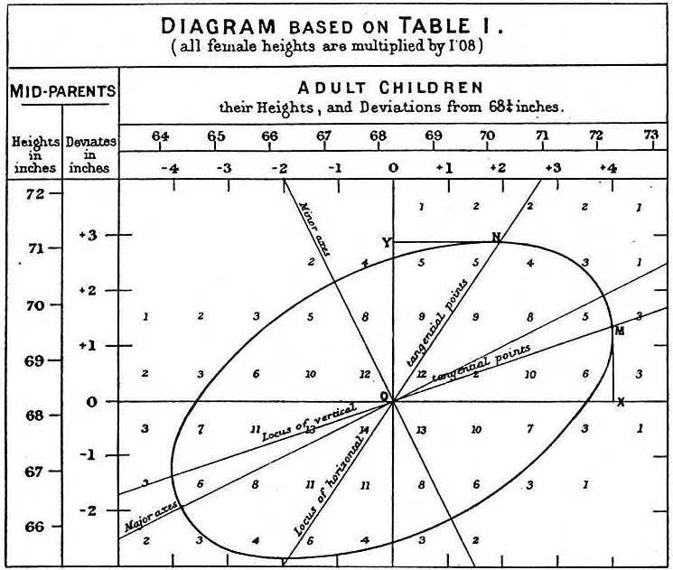
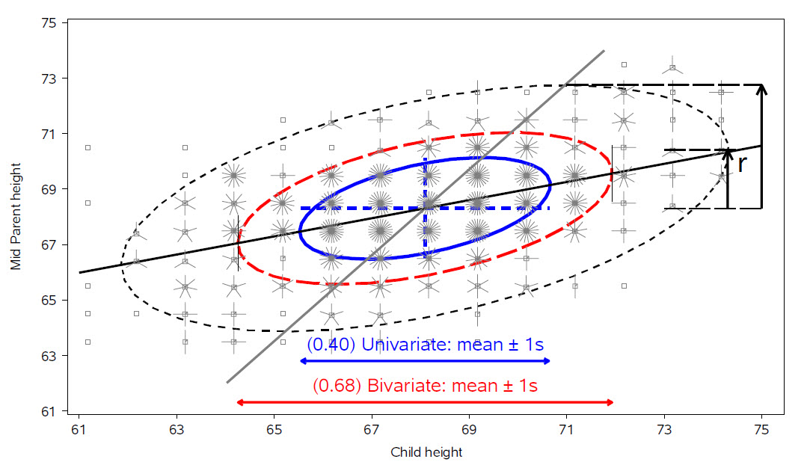

3 Plots of Multivariate Data
- Bivariate summaries
- smoothers
- data ellipses
- Quantitative data:
- scatterplot matrices
- parallel coordinate plots
- Categorical data:
- mosaic plots
- Generalized pair plots
3.1 Bivariate summaries
+ smoothers
+ data ellipses
3.1.1 The Data Ellipse
The data ellipse (Monette 1990), or concentration ellipse (Dempster 1969) is a remarkably simple and effective display for viewing and understanding bivariate relationships in multivariate data. The data ellipse is typically used to add a visual summary to a scatterplot, that shows all together the means, standard deviations, correlation, and slope of the regression line for two variables. Under the classical assumption that the data are bivariate normally distributed, the data ellipse is also a sufficient visual summary, in the sense that it captures all relevant features of the data. See Friendly, Monette, and Fox (2013) for a complete discussion of the role of ellipsoids in statistical data visualization.
It is based on the idea that in a bivariate normal distribution, the contours of equal probability form a series of concentric ellipses. If the variables were uncorrelated and had the same variances, these would be circles, and Euclidean distance would measure the distance of each observation from the mean. When the variables are correlated, a different measure, Mahalanobis distance is the proper measure of how far a point is from the mean.
To illustrate, Figure fig-mahalanobis shows a scatterplot with labels for two points, “A” and “B”. Which is further from the mean, “X”? A contour of constant Euclidean distance, shown by the red dashed circle, ignores the apparent negative correlation, so point “A” is further. The blue ellipse for Mahalanobis distance takes the correlation into account, so point “B” has a greater distance from the mean.
Mathematically, Euclidean (squared) distance for \(p\) variables, \(j = 1, 2, \dots , p\), is just a generalization of the square of a univariate standardized (\(z\)) score, \(z^2 = [(y - \bar{y}) / s]^2\),
\[ D_E^2 (\mathbf{y}) = \sum_j^p z_j^2 = \mathbf{z}^T \mathbf{z} = (\mathbf{y} - \bar{\mathbf{y}})^T \operatorname{diag}(\mathbf{S})^{-1} (\mathbf{y} - \bar{\mathbf{y}}) \; , \] where \(\mathbf{S}\) is the sample variance-covariance matrix, \(\mathbf{S} = ({n-1})^{-1} \sum_{i=1}^n (\mathbf{y}_i - \bar{\mathbf{y}})^T (\mathbf{y}_i - \bar{\mathbf{y}})\).
Mahalanobis’ distance takes the correlations into account simply by using the covariances as well as the variances, \[ D_M^2 (\mathbf{y}) = (\mathbf{y} - \bar{\mathbf{y}})^T S^{-1} (\mathbf{y} - \bar{\mathbf{y}}) \; . \] For \(p\) variables, the data ellipsoid \(\mathcal{E}_c\) of size \(c\) is a \(p\)-dimensional ellipse, defined as the set of points \(\mathbf{y} = (y_1, y_2, \dots y_p)\) whose squared Mahalanobis distance, \(D_M^2 ( \mathbf{y} )\) is less than or equal to \(c^2\).
When \(\mathbf{y}\) is (at least approximately) bivariate normal, \(D_M^2(\mathbf{y})\) has a large-sample \(\chi^2_2\) distribution (\(\chi^2\) with 2 df), so taking \(c^2 = \chi^2_2 (0.68) = 2.28\) gives a “1 standard deviation bivariate ellipse,” an analog of the standard interval \(\bar{y} \pm 1 s\), while \(c^2 = \chi^2_2 (0.95) = 5.99 \approx 6\) gives a data ellipse of 95% coverage.
Properties
The essential ideas of correlation and regression and their relation to ellipses go back to Galton (1886). Galton’s goal was to to predict (or explain) how a heritable trait, \(Y\), (e.g., height) of children was related to that of their parents, \(X\). He made a semi-graphic table of the frequencies of 928 observations of the average height of father and mother versus the height of their child, shown in Figure fig-galton-corr. He then drew smoothed contour lines of equal frequencies and had the wonderful visual insight that these formed concentric shapes that were tolerably close to ellipses. He then calculated summaries, \(\mathrm{Ave}(Y | X)\), and, for symmetry, \(\mathrm{Ave}(X | Y)\), and plotted these as lines of means on his diagram. Lo and behold, he had a second visual insight: the lines of means of (\(Y | X\)) and (\(X | Y\)) corresponded approximately to the loci of horizontal and vertical tangents to the concentric ellipses. To complete the picture, he added lines showing the major and minor axes of the family of ellipses, with the result shown in Figure fig-galton-corr.

For two variables, \(x\) and \(y\), the remarkable properties of the data ellipse are illustrated in Figure fig-galton-ellipse-r, a modern reconstruction of Galton’s diagram.

The ellipses have the mean vector \((\bar{x}, \bar{y})\) as their center.
The lengths of arms of the central cross show the standard deviations of the variables, which correspond to the shadows of the ellipse covering 40% of the data. These are the bivariate analogs of the standard intervals \(\bar{x} \pm 1 s_x\) and \(\bar{y} \pm 1 s_y\).
More generally, shadows (projections) on the coordinate axes, or any linear combination of them, give any standard interval, \(\bar{x} \pm k s_x\) and \(\bar{y} \pm k s_y\). Those with \(k=1, 1.5, 2.45\), have bivariate coverage 40%, 68% and 95%, corresponding to these quantiles of the \(\chi^2\) distribution with 2 degrees of freedom, i.e., \(\chi^2_2 (.40) \approx 1^2\), \(\chi^2_2 (.68) \approx 1.5^2\), and \(\chi^2_2 (.95) \approx 2.45\).
The regression line predicting \(y\) from \(x\) goes through the points where the ellipses have vertical tangents. The other regression line, predicting \(x\) from \(y\) goes through the points of horizontal tangency.
The correlation \(r(x, y)\) is the ratio of the vertical segment from the mean of \(y\) to the regression line to the vertical segment going to the top of the ellipse as shown at the right of the figure. It is \(r = 0.46\) in this example.
The residual standard deviation, \(s_e = \sqrt{MSE} = \sqrt{\Sigma (y - \bar{y})^2 / n-2}\), is the half-length of the ellipse at the mean \(\bar{x}\)
Because Galton’s values of parent and child height were recorded in class intervals of 1 in., they are shown as sunflower symbols in Figure fig-galton-ellipse-r, with multiple ‘petals’ reflecting the number of observations at each location. This plot is constructed using sunflowerplot() and car::dataEllipse() for the ellipses.
data(Galton, package = "HistData")
sunflowerplot(parent ~ child, data=Galton,
xlim=c(61,75),
ylim=c(61,75),
seg.col="black",
xlab="Child height",
ylab="Mid Parent height")
y.x <- lm(parent ~ child, data=Galton) # regression of y on x
abline(y.x, lwd=2)
x.y <- lm(child ~ parent, data=Galton) # regression of x on y
cc <- coef(x.y)
abline(-cc[1]/cc[2], 1/cc[2], lwd=2, col="gray")
with(Galton,
car::dataEllipse(child, parent,
plot.points=FALSE,
levels=c(0.40, 0.68, 0.95),
lty=1:3)
)3.2 R functions for data ellipses
A number of packages provide functions for drawing data ellipses of data, with various features.
3.3 Quantitative data:
+ scatterplot matrices
+ parallel coordinate plots3.4 Categorical data:
+ mosaic plots3.5 Generalized pair plots
#> 7 packages used here:
#> base, datasets, graphics, grDevices, methods, stats, utilsReferences
Dempster, A. P. 1969. Elements of Continuous Multivariate Analysis. Reading, MA: Addison-Wesley.
Friendly, Michael, Georges Monette, and John Fox. 2013. “Elliptical Insights: Understanding Statistical Methods Through Elliptical Geometry.” Statistical Science 28 (1): 1–39. https://doi.org/10.1214/12-STS402.
Galton, Francis. 1886. “Regression Towards Mediocrity in Hereditary Stature.” Journal of the Anthropological Institute 15: 246–63. http://www.jstor.org/cgi-bin/jstor/viewitem/09595295/dm995266/99p0374f/0.
Monette, Georges. 1990. “Geometry of Multiple Regression and Interactive 3-D Graphics.” In Modern Methods of Data Analysis, edited by J. Fox and S. Long, 209–56. Beverly Hills, CA: SAGE Publications.